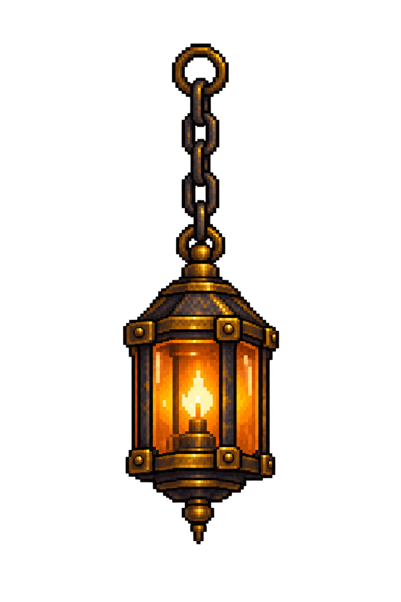
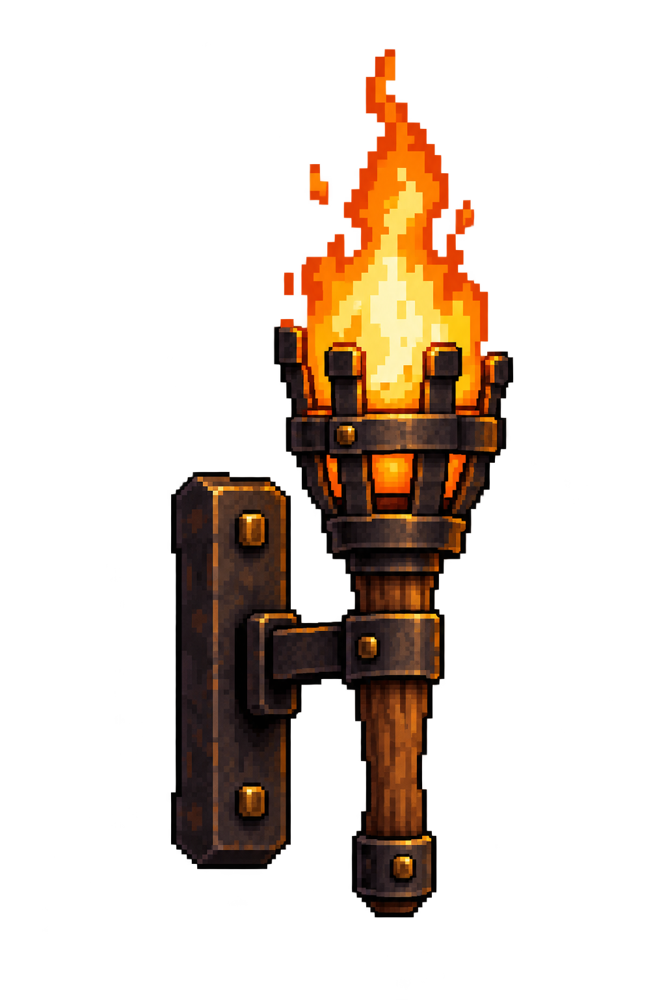
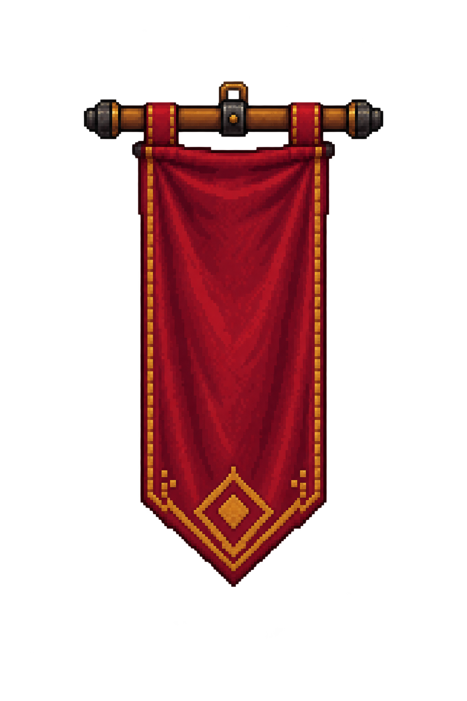
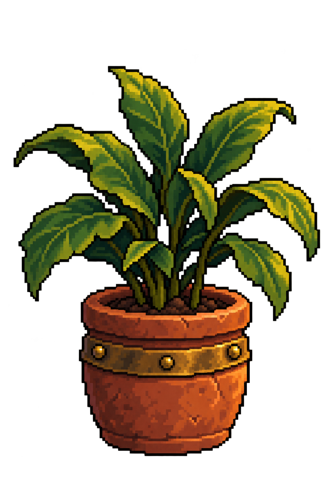

Production handoff/review page, not app UI. One PNG per object; copy the short description with that image.
The actual room shell guides the viewpoint; the approved Home concept guides materials and design. Existing furniture perspectives still need an art correction pass. Object positions and sizes await your manual alignment pass.
Static lantern, torch, banner and plant. Four built-in imagegen calls; exact AutoSprite saves/exports; zero AutoSprite credits used.
Full prompts · Source hashes and asset IDs · Actual Unity room capture

Use case: stylized-concept. Create ONE isolated static pixel-art room decoration for a Unity fantasy fitness game. Reference image 1 is the actual empty room: it controls camera/viewpoint, upright verticals and depth. Reference image 2 is the approved furnished Home concept: it controls the object's design, materials and warm subdued amber palette. Do not default to a rotated 45-degree isometric inventory icon. Match the room's near-frontal elevated camera at this object's mounting height. Crisp 16-bit-inspired pixel clusters, dark clean pixel edges, worn oak, dark iron and restrained aged brass. Portrait 1024x1536 full canvas, generous transparent margins, genuinely transparent RGBA everywhere outside the object and in every open gap. No room, wall, floor, contact sheet, UI, lettering, surrounding scenery or cast background shadow. No extra objects. All physical joins coherent and all edges complete. Subject: the single hanging lantern near the upper-left-middle ceiling of reference 2. Complete short chain of visibly interlinked dark iron links, a closed top suspension ring, an aged brass and dark iron lantern with an amber glass body, stout corner ribs, a little enclosed warm light. One continuous attached assembly. Intended mounting at the rear ceiling around reference-1 pixel (575,70), lantern descending vertically. View almost straight onto front; only a narrow right side, no broad roof/top view because lantern is near camera height. Flat level horizontal base and coherent slight depth. Limit warm light to the glass itself: NO luminous halo or glow rectangle. No beam or ceiling fixture outside the top ring. No candle outside the lantern.
Asset ID: cmuoi6pyy00015nu0zf89llvp. Static artwork; placement pending.

Use case: stylized-concept. Create ONE isolated static pixel-art room decoration for a Unity fantasy fitness game. Reference image 1 is the actual empty room: it controls camera/viewpoint, upright verticals and depth. Reference image 2 is the approved furnished Home concept: it controls the object's design, materials and warm subdued amber palette. Do not default to a rotated 45-degree isometric inventory icon. Match the room's near-frontal elevated camera at this object's mounting height. Crisp 16-bit-inspired pixel clusters, dark clean pixel edges, worn oak, dark iron and restrained aged brass. Portrait 1024x1536 full canvas, generous transparent margins, genuinely transparent RGBA everywhere outside the object and in every open gap. No room, wall, floor, contact sheet, UI, lettering, surrounding scenery or cast background shadow. No extra objects. All physical joins coherent and all edges complete. Subject: ONE wall-mounted torch assembly like the left rear wall light in reference 2. A modest warm orange static flame above a dark iron basket, short upright wrapped wood torch handle, and simple dark iron wall bracket/backplate connected behind the handle. Complete connected bracket, basket and handle, transparent openings. Intended on the rear wall near reference-1 pixel (245,255). Near frontal elevation with slight side thickness, no broad top view, vertical handle and backplate. Restrained flame, hard pixel clusters without bloom, no light halo and no painted wall. No arms, hand, chains, second torch or other props. This is a single still image, not a flame animation sheet.
Asset ID: cmuoi73gs000n530hkni73nfa. Static artwork; placement pending.

Use case: stylized-concept. Create ONE isolated static pixel-art room decoration for a Unity fantasy fitness game. Reference image 1 is the actual empty room: it controls camera/viewpoint, upright verticals and depth. Reference image 2 is the approved furnished Home concept: it controls the object's design, materials and warm subdued amber palette. Do not default to a rotated 45-degree isometric inventory icon. Match the room's near-frontal elevated camera at this object's mounting height. Crisp 16-bit-inspired pixel clusters, dark clean pixel edges, worn oak, dark iron and restrained aged brass. Portrait 1024x1536 full canvas, generous transparent margins, genuinely transparent RGBA everywhere outside the object and in every open gap. No room, wall, floor, contact sheet, UI, lettering, surrounding scenery or cast background shadow. No extra objects. All physical joins coherent and all edges complete. Subject: ONE short oxblood red hanging cloth banner for the rear wall, with a restrained brass/gold geometric barbarian diamond emblem, simple gold edge stitching and a pointed lower hem. Two visible cloth loops connect it to one horizontal wooden crossbar with small dark iron end caps and a short central mounting loop. Cloth plain and readable, small gravity folds only. Intended on flat rear wall near reference-1 pixel (405,150). Front elevation, crossbar horizontal and banner hangs vertically, symmetrical taper, no diagonal rotation, no isometric floor-plane view, no strong side face. Omit text, letters, skull faces, crest shields, weapons, wall, floor stand, flame and other props.
Asset ID: cmuoi7j690009lxj03m7kuwv0. Static artwork; placement pending.

Use case: stylized-concept. Create ONE isolated static pixel-art room decoration for a Unity fantasy fitness game. Reference image 1 is the actual empty room: it controls camera/viewpoint, upright verticals and depth. Reference image 2 is the approved furnished Home concept: it controls the object's design, materials and warm subdued amber palette. Do not default to a rotated 45-degree isometric inventory icon. Match the room's near-frontal elevated camera at this object's mounting height. Crisp 16-bit-inspired pixel clusters, dark clean pixel edges, worn oak, dark iron and restrained aged brass. Portrait 1024x1536 full canvas, generous transparent margins, genuinely transparent RGBA everywhere outside the object and in every open gap. No room, wall, floor, contact sheet, UI, lettering, surrounding scenery or cast background shadow. No extra objects. All physical joins coherent and all edges complete. Subject: ONE potted leafy plant for the left foreground floor of reference 1 near pixel (100,830). A modest round terracotta pot with a simple aged brass band and a compact cluster of distinct broad green leaves and short stems visibly emerging from dark soil. Leaves crisp, readable silhouette, no flowers. Upright pot sides and shallow horizontal elliptical rim, small amount of visible soil consistent with the actual room camera, not a top-down inventory icon or a deep view into the pot. Warm muted clay and greens fit reference 2. Flat stable pot bottom, no stand, saucer, floor tile, shadow puddle, glow, spilled dirt or neighboring objects.
Asset ID: cmuoi804f00016lpau8wj79q2. Static artwork; placement pending.